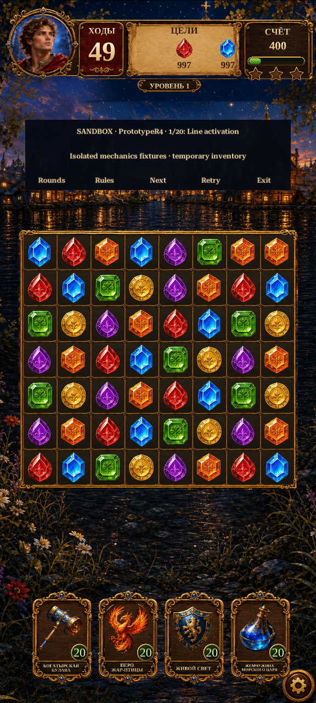

Gameplay · R20 specification
Build each effect from independent layers
First slice: the sapphire directional item. Preserve its approved design and the existing resolver; separate the projectile, launch plume, trail, sparks and cell impact so each can be authored and tuned.
Design review only. No new R20 Unity effect or asset pack is implemented here.
What changes after R19
R19 already reacts to actual gameplay events. Its remaining limitation is that several artwork layers are fused, and four-pose crossfades cannot provide all the control needed for a polished sequence.
| Layer | Next treatment |
|---|
| Item | Readable charge and release; exact idle silhouette. |
| Attack | Separate projectile body, travelling trail and launch plume. |
| Contact | Cell-specific impact, colored fragments and obstacle stage changes. |
| Aftermath | Short sparks/wisps that fade without delaying refill. |
Timing contract
This is a scheduling diagram, not the proposed final artwork. Origin: column4 on an8×7 board, zero-based. Blue cells have reached their scheduled contact.
Contact = 0.12 + 0.28 × cell distance ÷ 8. Animation follows the existing contact schedule; it does not decide which cells are destroyed.Existing Unity baseline
Actual R19 recording for comparison; this is not an R20 result.

Sampled silent Unity footage; not a phone performance measurement.Asset → authoring → gameplay
Separate transparent art → editable pose/VFX layers → existing board events → Unity capture and Android profiling. Use the existing sapphire, antique-gold and fairy-tale materials throughout.
Our board is Canvas-based. Particle simulation needs compatible UI rendering and clipping; adding a scene ParticleSystem alone is not the integration plan. Animator may author poses, while the existing command lifecycle owns resolution and recovery.
Full specification, asset prompts, proposed hierarchy and acceptance criteria
Next order: directional item → bomb → color special → existing inventory boosters → combinations. The example timings,3×3 bomb and generic art style are not substitutions for our project rules.